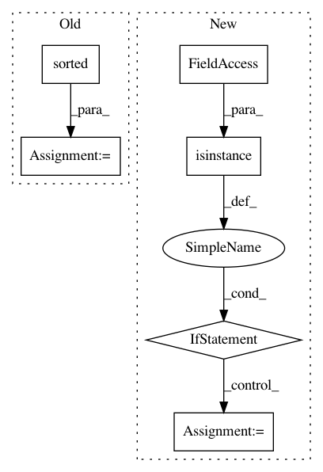

4b8716fd4bd6f462a9db9eee958f2508576ec019,gluoncv/utils/metrics/coco_detection.py,COCODetectionMetric,__init__,#COCODetectionMetric#Any#Any#Any#Any#Any#,32
Before Change
def __init__(self, dataset, save_prefix, use_time=True, cleanup=False, score_thresh=0.05):
super(COCODetectionMetric, self).__init__("COCOMeanAP")
self.dataset = dataset
self._img_ids = sorted(dataset.coco.getImgIds())
self._current_id = 0
self._cleanup = cleanup
self._results = []
self._score_thresh = score_thresh
After Change
Use coco to get real scores.
if not self._current_id == len(self._img_ids):
warnings.warn(
"Recorded {} out of {} validation images, incompelete results".format(
self._current_id, len(self._img_ids)))
import json
try:
with open(self._filename, "w") as f:
In pattern: SUPERPATTERN
Frequency: 3
Non-data size: 6
Instances
Project Name: dmlc/gluon-cv
Commit Name: 4b8716fd4bd6f462a9db9eee958f2508576ec019
Time: 2018-06-15
Author: cheungchih@gmail.com
File Name: gluoncv/utils/metrics/coco_detection.py
Class Name: COCODetectionMetric
Method Name: __init__
Project Name: RaRe-Technologies/gensim
Commit Name: da7432bf376bab88da4e3845c79863ca927d5187
Time: 2013-04-23
Author: radimrehurek@seznam.cz
File Name: gensim/corpora/dictionary.py
Class Name: Dictionary
Method Name: doc2bow
Project Name: tensorflow/hub
Commit Name: e77ef353f0ec74e4ea819354545848e3cd2ac51d
Time: 2018-08-21
Author: no-reply@google.com
File Name: tensorflow_hub/native_module.py
Class Name:
Method Name: find_signature_inputs_from_multivalued_ops